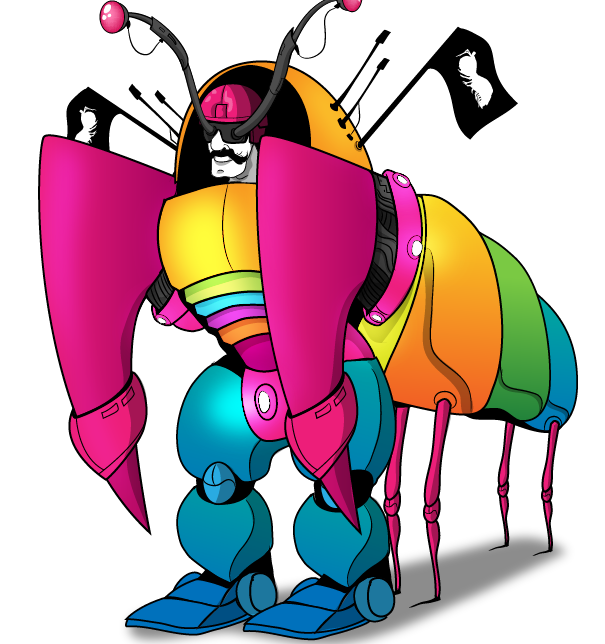

Fatos sobre o Stomatopoda
Classificação científica
Nome científico: Odontodactylus scyllarus
| Categoria | Atribuição |
|---|---|
| Reino | Animalia |
| Filo | Arthropoda |
| Subfilo | Crustacea |
| Classe | Malacostraca |
| Subclasse | Hoplocarida |
| Ordem | Stomatopoda |
A Stomatopoda vê tudo muito mais colorido

A lacraia-do-mar ou Stomatopoda estão no topo da cadeia alimentar quando se trata de visão colorida. Ele vive em locais quentes e de água rasa, e geralmente chega a tamanhos de 15 a 30cm. O Stomatopoda possui 16 cones de recepção de cores, enquanto humanos possuem somente três. Isso traz uma visão completamente diferente para esta criatura de eventos como o arco-íris, ou uma bomba termonuclear. Talvez isso explique porque este animal costuma ser encontrado em cores tão chamativas na natureza.
Aparências enganam, ou será que não?
Sendo uma criatura que percebe e apresenta tanta beleza, alguém poderia esperar que o Stomatopoda fosse uma espécie de semideus submarino, graciosamente flutuando nas profundezas do mar, cumprimentando lagostas e abençoando bebês. Porém, a verdade não poderia estar mais longe disso. A lacraia-do-mar é um verdadeiro pesadelo submarino, e um dos animais mais violentos do reino animal. Com habilidades como saliências de captura com velocidade que chega a 80km/h e aceleração semelhante a um riflê calibre 22.
Referências Bibliográficas
- The Oatmeal - Mantis Shrimp
- Wikipédia
- Enciclopédia Barsa